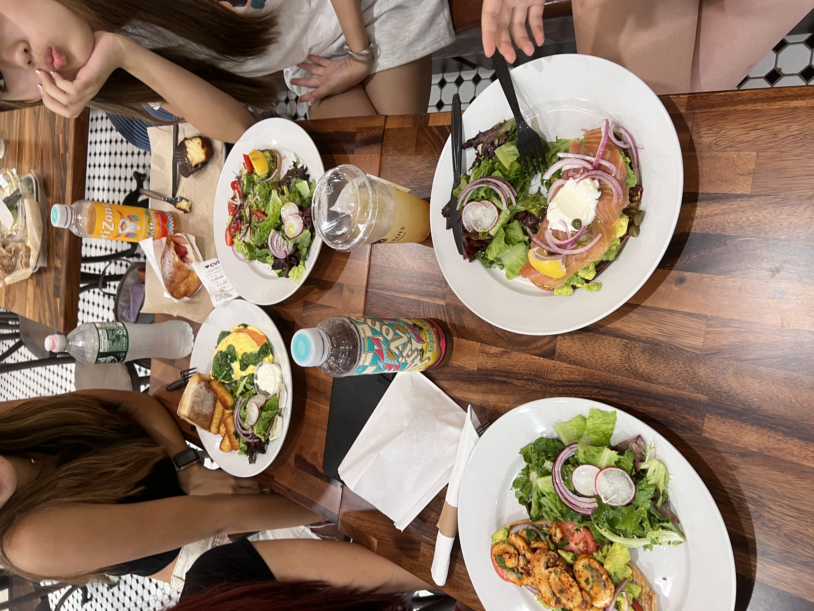
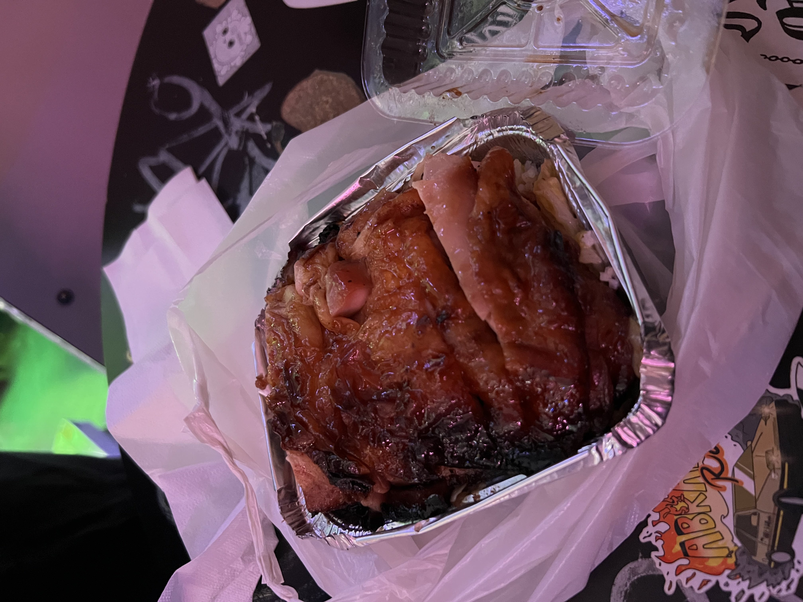
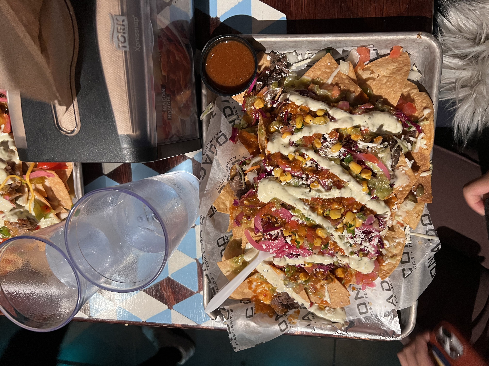

Hi! My name is Jing Li. I am currently a sophomore studying business, but I have a huge passion for food. In fact, my parents own a chinese restaurant back in Jersey where I am from. I created this page because I wanted to share my love for food. My favorite cuisines are Thai, Mediterranean, and obviously Chinese.
While I normally feel like Ann Arbor food are quite mid, Frita Batidos blew me away. In particular, I like to get their beef frita with everything on it. Yes, that means I get the egg, the avocado, and EXTRA Sauce.
I do not think the food here was the best that I've ever gotten, but there have been so many happy memories I've shared with my friends here, which is why it is such a healing meal for me. Their salmon eggs benedict, while standard, is still delicious. I like that their hollandase was not too thick and perfectly coats and complements the salmon fishy taste and egg yolk.
This is an absolute gem from Chinatown in New York City. I had to wait in a 20 minute line to get that super tiny plate of food. You know it is good when you have to pay cash for the goods. While the duck was marinated, it was not super salty. They also put cabbage underneath it to neutrilize the taste and poured extra sauce on the rice underneath.
This was aight. It was from Condados in Ann Arbor. It was pretty standard mexican food, but I love tacos and nachos. Hence, why I included it in!